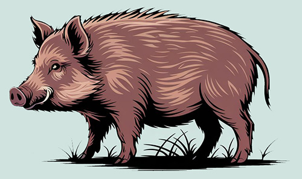
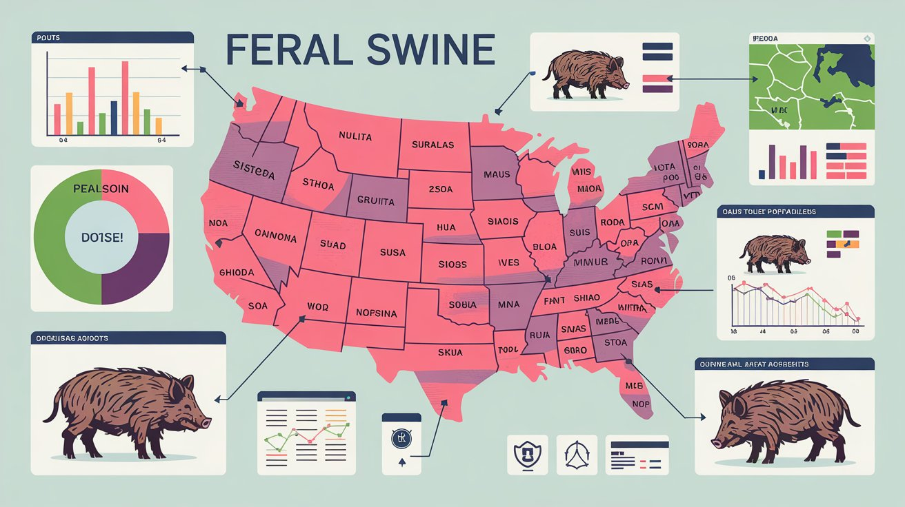

scotcorm
scotcorm
A Case Study of the Quality and Availability of Online Data about Feral Swine (Sus scrofa) population in the United States
by: Scott Cormier
This study is a brief examination of the methodological challenges and the constitution of "evidence" within the domain of feral swine (Sus scrofa) population monitoring across the United States. Finding conceptual parallels with some of the ideas found in H.M. Collins' analysis of evidential cultures in physics, I conducted this review with principles of evidential culture in mind.[1]
The monitoring of feral swine populations represents a particularly instructive case for examining the tension between formalized scientific practices and distributed observational networks. These invasive mammals have established themselves across the United States, and have an estimated population exceeding 6 million. Recognized as one of the world's most destructive invasive species, these animals pose substantial threats to agricultural ecosystems and rural economies. [2,3]
Yet despite their economic and ecological significance, no coherent national framework exists for monitoring their population. Through systematic review of publicly available data sources, including state wildlife agencies, federal departments, and specialized hunting resources, I identified significant inconsistencies in estimation methodologies, reporting standards, and data accessibility. There were wide variations in population reporting formats, from single-point estimates to broad numerical ranges, that complicated cross-state comparisons. The fragmentation extends beyond mere technical differences to reveal deeper questions about what constitutes legitimate knowledge in this domain: Whose observations count? Which methodologies are privileged? How might the boundaries between "formal" and "informal" knowledge be productively reconfigured?
This investigation concludes that technology, and the principles of open evidential culture should be leveraged to construct more robust knowledge about feral swine populations through the strategic integration of academic expertise and distributed observational networks.
I began my literature review by examining publicly available resources on feral swine populations across the United States. My search focused on government agencies, university websites, and specialized hunting resources that provide population data.
 Online literature reveals a lack of methodological consistency in how feral swine populations are monitored and reported. While the biological and ecological dimensions of the feral swine lifecycle have received substantial scholarly attention, considerably less research has focused on the methodological challenges inherent in population monitoring and the resulting data inconsistencies.
Studies have attempted to quantify feral swine populations at state or regional levels using various methodologies, including camera trapping (Massei et al., 2018), mark-recapture techniques (Hanson et al., 2008), and aerial surveys (Campbell et al., 2010). However, these approaches vary significantly in their implementation, accuracy, and geographic coverage. The resulting heterogeneity in population estimation methodologies must create substantial challenges for policymakers and wildlife managers attempting to allocate resources effectively or evaluate management success (or failure) across jurisdictional boundaries.[4,5,6]
Federal and State agencies vary dramatically in their approaches, with some providing detailed population estimates (Texas, Florida) while others offer only vague qualitative assessments (North Carolina, Oklahoma). Lack of consistent standards to determine how population data for feral swine should be collected, reported, and utilized across different states and agencies impedes the development of coordinated management strategies and prevents accurate assessment of population trends at regional or national scales. It also prevents researchers from effectively combining their data and perhaps reaching useful conclusions.
This review identified a significant gap in the literature regarding standardized methodologies for feral swine population assessment across jurisdictional boundaries, highlighting the need for improved coordination between researchers and management agencies, and opportunities to expand the most successful of the approaches that I found.
 Data for this case study was collected online, from websites that are freely available to the general public. The goal was to be inclusive in my approach, and determine if useful data about feral swine (Sus scrofa (feral type) Linnaeus) populations across the United States exists online, or if the means to create such data could be developed. The selection of this invasive species as an analytical object was especially interesting because their population exceeds 6 million individuals and causes extensive ecological and economic disruption, but approaches to data gathering and study of the subject by different knowledge systems are inconsistent and often ineffective.
The methodological approach was informed by Collins' conceptualization of evidential cultures as socially-constructed frameworks governing what counts as legitimate knowledge. Feral swine data provides a particularly illuminating case for such analysis precisely because it exists at the intersection of multiple institutional domains—state wildlife management, academic research, agricultural policy, and recreational hunting—each with distinct epistemic commitments and data practices. This diversity of approaches creates natural variation in evidential standards that can be analyzed and compared.
I systematically reviewed publicly-available online resources produced by state wildlife agencies, research universities, and specialized hunting resources with online records of feral swine populations. For each source, I reviewed the type of population data provided, the methodology used for estimation (if disclosed), the frequency of updates, and the accessibility of raw data- testing the hypothesis that democratized access to knowledge might reveal alternative evidential regimes outside traditional mechanisms. I looked at the content of population estimates, and also the material practices through which such estimates were generated, including: the explicit and implicit methodologies deployed for population assessment, the technical and social infrastructures governing data accessibility, and the rhetorical framing of certainty and uncertainty within different knowledge communities.
The USDA's Animal and Plant Health Inspection Service (APHIS) maintains some of the most comprehensive data on feral swine distribution but offers limited granularity on population sizes, and State wildlife agencies are not much better in their reporting practices. In my review of publicly available feral swine population data, I found striking inconsistencies in how data is reported. The Texas Parks and Wildlife Department reports "about 2.6 million" feral swine, while Georgia's Department of Natural Resources provides a broad range of "200,000 to 600,000." Florida's Fish and Wildlife Conservation Commission simply states "over one-half million."[7,8,9] These variations in reporting format—from single-point estimates to wide numerical ranges—make meaningful cross-state comparisons nearly impossible. Since there is significant epistemological fragmentation regarding the nature of data in this domain, it falls to researchers to form workable processes and procedures.
How data is labelled can also make it difficult to determine what is being tracked, and whether there are trends. These are not merely differences in reporting format, but represent fundamentally different accommodations between precision and accuracy. How should we represent uncertain knowledge through numbers? The Arkansas Department of Agriculture tracks "removal" data, while Louisiana refers to "harvesting," and Oklahoma uses "take" figures to describe how many hogs are killed.[10, 11, 12] State agencies seem to be struggling to determine what to report to the public, and have not defined any standardized practices. In all fairness, it is a difficult problem. Falyn Owens, a wildlife biologist with the North Carolina Wildlife Resources Commission, explained that "We don't in North Carolina have a good estimate of the population of feral swine across the state because it's a really, really hard number to pin down" —a rare institutional acknowledgment of what Collins terms "experimental regress," the recognition that measurement uncertainty may be fundamentally irreducible rather than merely technical.[13, 14]
The investigation identified promising alternative knowledge regimes operating outside traditional institutional boundaries.[15,16,17] The hunting-focused commercial platform Captain Experiences, in particular, deserves mention, as it integrates recreational hunting information with scientific data sourced from the University of Georgia's Center for Invasive Species and Ecosystem Health[18] to construct a fifteen-state ranking list based on EDDMapS (Early Detection & Distribution Mapping System) data.
What distinguishes this commercial platform is not merely its use of data but its explicit methodological transparency: "To determine the states with the biggest wild hog problem, researchers at Captain Experiences calculated the number of feral hog sightings reported in each state. In the event of a tie, the state with the greater percentage of counties with feral hogs was ranked higher." This methodological declaration—uncharacteristic of commercial platforms—represents an incursion of scientific evidential standards into non-academic domains. My one criticism of Captain Experiences is that they use the data but do not encourage their members to help report new information to the EDDMapS site. Hunting organizations and citizen science platforms are promising sources of hands-on data to help support researchers, and together they could build a foundation of research best practices that state and federal agencies might adopt.
The University of Georgia's Center for Invasive Species and Ecosystem Health's Early Detection & Distribution Mapping System (EDDMapS) offers records dated July 1, 1982, to October 30, 2024, and include validated data entered by informed observers and made freely available to everyone on their website. The work that the University of Georgia's EDDMapS site is significant, and might be considered an attempt to reconfigure the boundaries between expert and non-expert knowledge production. Established in 2005, this system was initially designed for specialized institutional use but has evolved into a continent-spanning infrastructure for citizen science. Its methodological innovation lies in creating what might be termed a "calibrated democratization" of data collection—opening observation to any participant while subjecting contributions to expert verification prior to formal inclusion.
This hybrid model represents a productive tension between open and closed evidential cultures, potentially resolving the central dilemma of invasive species monitoring: how to achieve sufficient observational scale while maintaining scientific credibility. This democratized approach to data collection could harness the observational power of thousands of individuals across the continent, creating a far more extensive monitoring network than any single institution could maintain, and their standardized approach to presenting data across states offers a rare opportunity for direct comparison that is absent from most government resources.
I was disappointed to discover that their feral hog records only covered July 1, 1982, through October 30, 2024, but the limitation of records might not be considered to be a technical failure, but as an ongoing negotiation between existing processes and emerging practices of distributed knowledge production. There is a unique opportunity for hunters, and others who benefit from feral hog tracking, to contribute their findings to this standardized and useful collection of data.
My analysis supports previous research by Campbell et al. (2010) and Hanson et al. (2008) who identified methodological inconsistencies in wildlife population monitoring. However, my findings extend this work by specifically documenting how these inconsistencies manifest in publicly available data sources across jurisdictional boundaries. The current situation creates isolated repositories of information that cannot be meaningfully integrated or understood. Texas, for example, is a large state. Is that the reason why it shows the highest numbers? Also, should we be considering the fact that unequal numbers of researchers recording and reporting signtings might skew the results?[5,6]
The biological and behavioral characteristics of feral swine—their adaptability, nocturnal habits, and responses to hunting pressure—create inherent challenges in population estimation. However, these natural difficulties are compounded by institutional and methodological fragmentation. When Georgia reports a population range of "200,000 to 600,000" while neighboring Florida simply states "over one-half million," the utility of such figures for cross-state management planning is severely limited. These are not merely different numerical expressions but distinct systems of knowledge production whose outputs cannot be meaningfully integrated because they rest on different implicit assumptions about what constitutes valid evidence.[8,9]
This study has several limitations worth acknowledging. First, I focused exclusively on publicly available online resources, which may not reflect the full scope of data available to wildlife managers through internal channels, or to experts in universities who have access to professional journals and data sites. There is a "tacit knowledge" circulating within closed professional communities—the unwritten expertise and judgment cultivated within wildlife management agencies and academic research groups, which I do not have access to as an outsider. Second, my analysis was limited to English-language resources, potentially missing valuable contributions from international research on feral swine management. Finally, the rapidly evolving nature of online resources means that some data sources may have been updated since my review.
Despite these considerations, my analysis reveals the University of Georgia's EDDMapS as an exemplary case of what Collins might term "interactional expertise"—a system designed to facilitate productive exchange between different knowledge communities while preserving distinct epistemological commitments. By creating mechanisms for amateur contributions while maintaining expert verification, EDDMapS demonstrates how the apparent opposition between "open" and "closed" evidential cultures might be productively reconfigured into complementary rather than competing knowledge systems.
This investigation reveals not merely technical inconsistencies but a fundamental fragmentation in the evidential cultures that shape our collective knowledge of feral swine populations across the United States. This epistemic fragmentation manifests in what Collins would recognize as competing "truth regimes"—different institutional frameworks that establish incompatible standards for what constitutes valid knowledge. The consequence is not simply a lack of standardization but a more profound inability to establish a coherent collective understanding of a significant ecological phenomenon.
When examined through Collins' conceptual framework, the current landscape reveals a productive tension between closed evidential cultures (typified by state wildlife agencies that restrict access to raw data, or designate the importance of data differently) and more open frameworks (represented by hunting organizations and citizen science platforms that prioritize geographic coverage and observational volume). These are not merely different approaches to the same epistemic project but represent fundamentally different conceptions of how knowledge about ecological systems should be constituted and validated. In practical terms, this epistemic fragmentation helps explain why coordinated management efforts have struggled despite decades of institutional attention—without shared evidential standards, collective action becomes unsustainable.
While information is readily accessible on the internet, its superabundance can cause valuable insights to be buried beneath mountains of low-quality content. Algorithms that point researchers to the information that is most popular might miss the information that is most valid. To address this issue, I propose developing expert-curated lists that connect users to reliable information vetted by specialists in the field. Academic institutions could play a crucial role in this epistemic architecture, allowing students to make meaningful contributions to ongoing research initiatives that continue beyond their academic tenure. Eventually, these efforts would accumulate into comprehensive databases housing years of consistently formatted data—something we currently lack in today's information ecosystem.
Future research should focus not merely on standardizing technical protocols but on fostering what Collins terms "interactional expertise"—the capacity to move productively between different knowledge communities without requiring their complete integration. The University of Georgia's EDDMapS exemplifies this approach, creating mechanisms for knowledge exchange while preserving the distinct contributions of different evidential cultures.
Universities are uniquely positioned to function as epistemic mediators in this process, possessing both the scientific authority to validate methodological approaches and the institutional capacity to engage diverse stakeholder communities. By creating platforms for interdisciplinary collaboration that explicitly acknowledge rather than suppress evidential differences, academic institutions could foster a more robust collective understanding of complex ecological phenomena like feral swine populations—simultaneously accommodating the scientific rigor privileged by academic research, the geographical coverage enabled by citizen observation, and the practical knowledge embedded in hunting and agricultural communities.
- 1. Collins, H. M. (1998). The Meaning of Data: Open and Closed Evidential Cultures in the Search for Gravitational Waves. American Journal of Sociology, 104(2), 293-338.
- 2. United States Department of Agriculture, Animal and Plant Health Inspection Service. (n.d.). History of feral swine in the Americas. https://www.aphis. usda.gov/ operational-wildlife-activities/feral-swine/distribution
- 3.United States Department of Agriculture, Southwest Climate Hub. (n.d.). Feral swine bomb. https://www.climatehubs .usda.gov/ hubs/southwest/topic/feral-swine-bomb
- 4. (Massei et al., 2018), Camera traps and activity signs to estimate wild boar density and derive abundance indices. Pest. Manag. Sci, 74: 853-860. https://doi.org/ 10.1002/ps.4763
- 5. (Hanson et al., 2008), Effect of experimental manipulation on survival and recruitment of feral pigs. https://bpb-us-e2.wpmucdn.com/ wordpress.auburn.edu /dist/0/141/ files/2014/05/202009-WildRes.pdf
- 6. (Campbell et al., 2010), Feral Swine Behavior relative to Aerial Gunning in Southern Texas. https:// digitalcommons.unl.edu/cgi/ viewcontent.cgi?article=1878 &context=icwdm_usdanwrc
- 7. Texas Farm Bureau. (n.d.). Controlling feral hogs. https://texasfarmbureau.org/ controlling-feral-hogs/
- 8. University of Georgia Extension. (2020, January). Feral hogs. "https://site.extension.uga.edu/ townsandunionag/ 2020/01/feral-hogs/"
- 9. North Palm Beach County Invasive Species. (n.d.). Feral hogs: A growing problem. https://www.npbcid.org/ feral-hogs-a-growing-problem
- 10. Arkansas Department of Agriculture. (n.d.). Feral hog population and removal data.https://agriculture. arkansas.gov/arkansas-department -of-agriculture-services/feral-hog/
- 11. Louisiana Wildlife and Fisheries. (n.d.). Feral Hogs https://www.wlf. louisiana.gov/page/ feral-hogs #:~:text=According%20to% 20a%20mail%20survey, by%20farmers%20or%20 professional%20trappers.
- 12. Oklahoma Wildlife Department. (n.d.). Feral hogs hunting information. https://www.wildlifedepartment .com/hunting/feral-hogs
- 13. North Carolina Department of Agriculture. (n.d.). Feral swine information. https://www.ncagr.gov/ divisions/veterinary /FeralSwine/Learn
- 14. Talton, T. (2023, November 27). Feral hogs a largely unseen but costly problem in state. Coastal Review.https://coastalreview.org/ 2023/11/ feral-hogs-a-largely-unseen-but-costly-problem-in-state/
- 15. Backfire. (n.d.). Best US states for hunting hogs, plus laws and seasons. https://backfire.tv/ best-states-for-hog-hunting/
- 16. Captain Experiences. (n.d.). States with the biggest wild hog problem. https://captainexperiences.com/ blog/states-with-biggest-wild-hog-problem
- 17. Bowhunting.net. (n.d.). Number of feral hogs per state. https://bowhunting.net/ 2023/02/number-of-feral-hogs-per-state/
- 18. University of Georgia Center for Invasive Species and Ecosystem Health. (n.d.). Early Detection & Distribution Mapping System (EDDMapS). https://www.eddmaps.org/ distribution/List.cfm?sub=3874
- 19. Farm Journal's Pork Business. (n.d.). Meet Mississippi's yawt-yawt wild pigs nightmare and hunting legend. https://www.porkbusiness.com /news/industry/ meet-mississippis-yawt-yawt-wild-pigs -nightmare-and-hunting-legend-making
- 20.South Carolina Department of Natural Resources. (n.d.). Wild pig information. https://www.dnr.sc.gov/ wildlife/hog/index.html
- 21. California Wildlife Agency. (n.d.). Wild pig conservation. https://wildlife.ca.gov/ Conservation/Mammals/Wild-Pig
- 22. ‘Biggest wild hog problem’ in the US? California is in the top 10 for feral pigs By Brianna Taylor. Updated November 28, 2023 9:26 AM. https://www.sacbee.com/ news/california/ article282384908.html